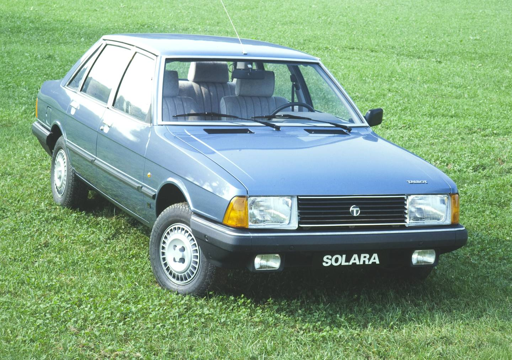
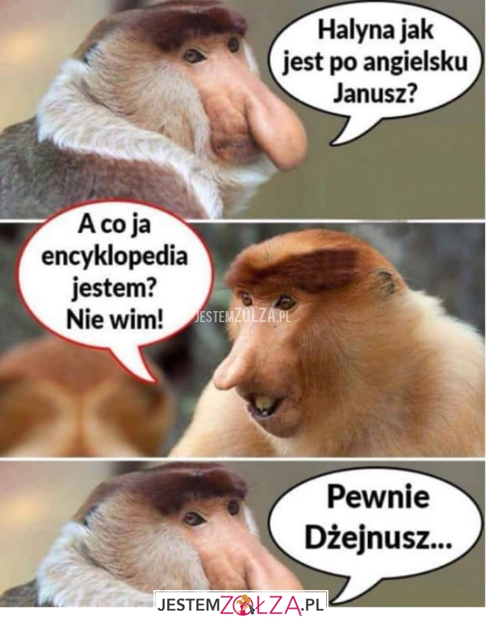

To jest zwykły tekst... To jest zwykły tekst...
Treść akapitu matka polka częstochowska pielgrzymka pisiorów onet ssie
To jest zwykły tekst...
Ten tekst zostanie wytłuszczony i pochylony.
treść akapitu
Dzisiaj byłem w kołchozie i pracowałem do 14
Barbara Nowacka
w piątek po południu zapoznała się z raportem podkomisji smoleńskiej, którego treść wciąż nie została upubliczniona.
- Był budowany pod tezę - mówi w rozmowie z WP. Posłanka Koalicji Obywatelskiej i córka Izabeli Jarugi-Nowackiej,
która zginęła 10 kwietnia 2010 r., ujawnia, że według Antoniego Macierewicza raport
zostanie opublikowany do końca listopada.
To już kolejny termin wyznaczony przez szefa podkomisji.
Był budowany pod tezę - mówi w rozmowie z WP. Posłanka Koalicji Obywatelskiej i córka Izabeli Jarugi-Nowackiej,
która zginęła 10 kwietnia 2010 r., ujawnia, że według raport
zostanie opublikowany do końca listopada.
To już kolejny termin wyznaczony przez szefa <podkomisji>.
Zauważ, że znaczniki zamykamy w kolejności odwrotnej jak je otwieraliśmy. Czyli najpierw zamykamy znacznik, który został otwarty jako ostatni (w naszym przykładzie jest to:), a na końcu zamykamy ten znacznik, który otworzyliśmy jako pierwszy (czyli).


no a teraz powiedzcie mi dzieci czy chcecie zobaczyć janusza i halynkę?
no a teraz powiedzcie mi dzieci czy chcecie zobaczyć janusza i halynkę?
no a teraz powiedzcie mi dzieci czy chcecie zobaczyć janusza i halynkę?
no a teraz powiedzcie mi dzieci czy chcecie zobaczyć janusza i halynkę?
no a teraz powiedzcie mi dzieci czy chcecie zobaczyć janusza i halynkę?
no a teraz powiedzcie mi dzieci czy chcecie zobaczyć janusza i halynkę?
no a teraz powiedzcie mi dzieci czy chcecie zobaczyć janusza i halynkę?